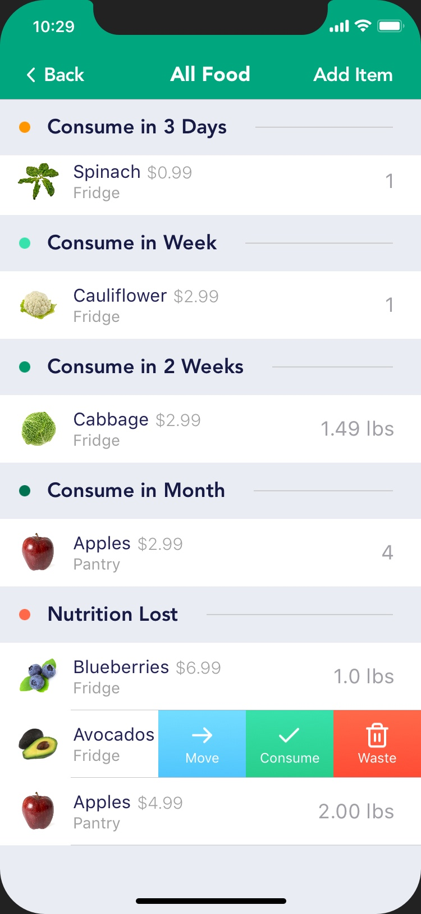
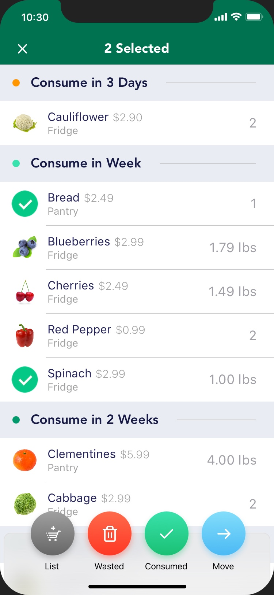
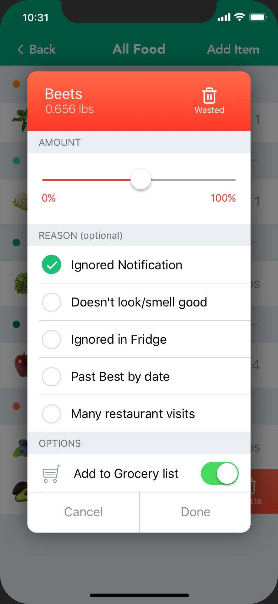

FoodCache helps you use more of the food that you buy.
Every year, tons of edible food finds it’s way into landfills, mostly because people didn’t use it in time. We want to change that.
How it works
Use FoodCache to scan your grocery receipts or manually add food items to create an inventory
Follow FoodCache prompts for what to eat first
Update your food inventory as you eat it
Track food you wasted to improve purchasing habits
Waste less food, save more money
The more you use FoodCache the more the app learns about your purchasing and consumption habits. FoodCache then helps you buy the right amount so that you waste less food.
App Screenshots



The Team
Usha Bhamidipati
Co-Founder
Founding member passionate about reducing food waste in home kitchen.
(Fremont, USA)
Gyan Lakhwani
Product Designer
Product designer working on designing intuitive experiences for digital products.
(New Delhi, India)
Nirav Vavadiya
iOS Developer
iOS Developer with 7 years of experience in mobile application development.
(Surat, India)
Artsiom Ivashchanka
Python Developer
Python Developer and Backend Engineer on the Foodcache team
(Seattle, USA)
Peter Cech
Public Relations Practitioner
Public relations practitioner with a focus on behavioural change campaigns to reduce waste at its source.
(Vancouver, Canada)
Roman Voronin
Python Developer
Python Developer and AWS Cloud Engineer on the Foodcache team